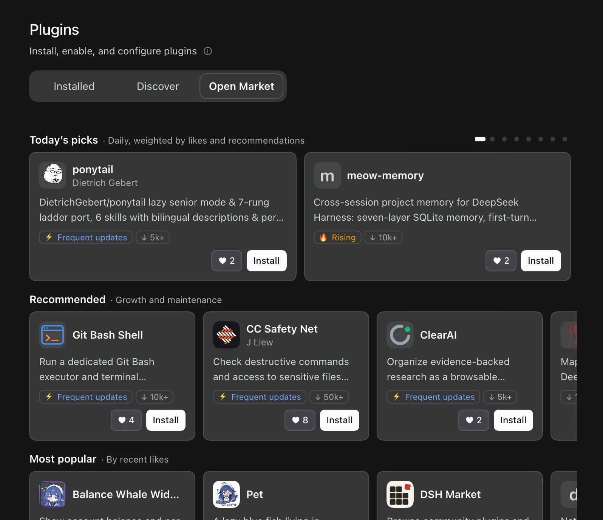
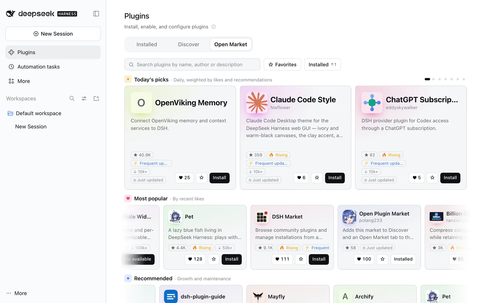

Image Generation
dsh-image-gen
Connect image-generation providers and local ComfyUI to the conversation.
- Name
- dsh-image-gen
- Version
- 0.9.2
- Released
- 19 Oct 2026
A plugin index with daily picks for DeepSeek Harness. Since the October 15 update DSH reads plugin markets, so copying the address below into Discover is all it takes to browse and install hundreds of community plugins.
Run one line in a terminal:
dsh plugin --profile desktop add dsh-open-marketOr in DSH, open Plugins → Add plugin and enter the package namedsh-open-market
Either way it switches on Custom plugin markets, adds this index and an Open Market tab to the Plugins page; restart DSH afterwards.
Stars aren't everything here. The default picks refresh every day and put fast-growing, actively shipped, genuinely good plugins first, with verification, downloads and stars as supporting signals.




dsh-image-gen
Connect image-generation providers and local ComfyUI to the conversation.
ds-bot
Create long-lived bots with memory, direct messages and group chats for multi-bot collaboration.
@linxin666/dsh-client-ui-git-graph
Browse branch history and run workspace Git operations from the web interface.
dsh-univer-office
Create, edit and review spreadsheets, documents and slides in DSH, with Office import and export.
beauticode-dsh
Use local images or videos as backgrounds in the web and desktop interfaces.
dsh-plugin-wallpaper-engine
Use local Wallpaper Engine scenes, web wallpapers and videos behind the DSH interface.
dsh-vision-router
Route image questions to vision providers and expose OCR, grounding and pixel comparison tools.
dsh-claude-style
Claude Code Desktop theme for the DeepSeek Harness web GUI — ivory and warm-black canvases, the clay accent, a Claude-style model picker, permission segments and an account drawer.
@openviking/dsh-memory-plugin
Connect OpenViking memory and context services to DSH.
dsh-codex-subscription
Connect eligible ChatGPT and Codex subscriptions through OAuth and view account quotas in DSH.
Cross-session long-term memory for DeepSeek Harness (memory palace · AGI Architecture Exploration on dsh-market): dual-scope SQLite memory graph, hybrid retrieval, provenance audit, and a knowledge flywheel.
dsh-config-manager
Back up, restore, export, import, migrate and sync your complete DSH configuration: settings, plugins, MCP servers, skills, agent presets and workspaces.
dsh-rewind-plugin
Rewind a conversation in place to any earlier user message and optionally restore the files the agent changed, without creating a branch.
@nanmicoder/dsh-agent-teams
Coordinate agent teams with task dependencies, direct messaging and a web monitor.
@a9i5k4/dsh-auto-memory
Recall and consolidate project memory with handoff ledgers, planning notes and context tracking.
dsh-pet
A lazy blue fish living in DeepSeek Harness: plays with a Rubik's cube, snacks, naps, roams the desktop, tracks your balance wallet, and chats when idle.
dsh-cost-meter
Track session and daily model costs alongside account balances, budgets, and subscription usage.
dsh-gitbash-shell
Run a dedicated Git Bash executor and terminal integration on Windows.
Review DeepSeek Harness file changes in native sidebar tabs
dsh-openwrite
Manage novel outlines, characters, annotations and review workflows with writing presets and a local Python backend.
@eduwork/dsh-literature
Search DBLP and arXiv, retrieve BibTeX citations and access available paper full text.
@xmanrui/dsh-im
Connects WeChat, Feishu, WeCom, DingTalk, QQ, Telegram, WhatsApp, Slack, Discord, and Matrix to DSH.
dsh-pocket
Pair a phone with desktop DSH over LAN or a public connection to follow the same session.
@zilliz/memsearch-dsh
Share Markdown memory across coding agents, with automatic capture, retrieval and review of skill candidates.
dsh-brewreel
Validate storyboard JSON and render vertical promotional videos locally with Remotion.
@tt-a1i/archify-dsh
Turn plans and codebases into interactive architecture diagrams through a bundled skill.
dsh-remote-plugin
Access sessions, approvals and files from mobile clients through a token gateway, with server switching and offline chat caching.
dsh-better-sidebar
Keep files, an editor, changes, tasks and side chat together in a per-conversation sidebar.
dsh-connect-workbuddy
Connect locally signed-in WorkBuddy models and view account credits.
dsh-meme
One-click meme picker in the composer, plus a searchable multi-pack library: install packs from the marketplace, filter by mood or keyword, and let the model learn new images.
@noob-stupid/dsh-plugin-console
Manage plugin sources and framework upgrades with rollback and compatibility gates.
dsh-vscode-mode
Add a Monaco editor and review agent edits with per-change acceptance, rejection and rollback.
DeepSeek Harness plugin-development knowledge base: official docs mirror, contract rules, migration guide, verified issue index, and the dsh-plugin-dev CLI.
@modusensus/dsh-mneme
Cross-session memory: auto-distill each session into a local SQLite store, inject on demand, consolidate while idle (autoDream).
@liustack/modlens
Add image understanding for text-only models through a separate vision provider.
dsh-whale-widget
Show account balance and per-turn usage in a customizable animated whale widget.
dsh-qoder-connect
Connect domestic and international Qoder model services to DSH.
@nonamelego/dsh-catppuccin
Apply Catppuccin color schemes and an optional translucent web skin.
dsh-plugin-tool-management
One settings panel for MCP, skills, memory, subagents, prompts and archived sessions, with custom scenarios that switch the whole setup at once. The agent can also operate this plugin.
@cloudbase/dsh-plugin
Manage CloudBase databases, storage, authentication and application deployment from DSH.
dsh-postiz
Connect Postiz over MCP to inspect channels and posting rules, manage drafts and publish immediately or on schedule.
dshmarket
Browse community plugins and manage installations from a visual market inside DSH.
dsh-pet-live2d
A Live2D pet docked in the DSH interface: she follows the pointer, reacts to clicks and changes expressions with each session phase, with configurable motions, expressions and lines.
cc-safety-net
Check destructive commands and access to sensitive files before tool execution.
@mstar-harness/dsh
Use skills to guide engineering tasks through the harness and agent loop.
dsh-ssh-ops
Drive remote servers from the conversation: interactive terminal, SFTP file management, port forwarding and database management.
@michengai/dsh-skills-manager
Manage local and project skills with repository installs, update previews, backups, and restoration.
misakanet
Search evidence-rated failure lessons through the public MisakaNet MCP service.
Try another search or choose all categories.
DeepSeek Harness (DSH) can browse any plugin index from its Discover tab. Open Plugin Market lists 854 community plugins: add https://dshopen.org/index.json as an index source to browse, search and install them inside DSH, or browse them here by category, growth and release date.
Option 1: switch on Custom plugin markets under Plugins → Experimental plugins, go to Discover → Add index source, paste the index URL, then search for the plugin in Discover and install it. Option 2: run dsh plugin --profile desktop add dsh-open-market, which does all of that for you and adds an Open Market tab to the Plugins page.
The default order refreshes every day and leads with plugins that are growing fast and shipping often, with verification, downloads, stars and likes as supporting signals. No author can flood the list, so new projects get a turn on the first screen.
No. Open Plugin Market is an independent community project. It uses the index format DSH's official plugin market reads, and DSH itself downloads and installs every plugin.
Open a request on GitHub with a public repository, an npm release and a license. Once listed, put the badge in your README: it shows your likes and links to your plugin's page here.